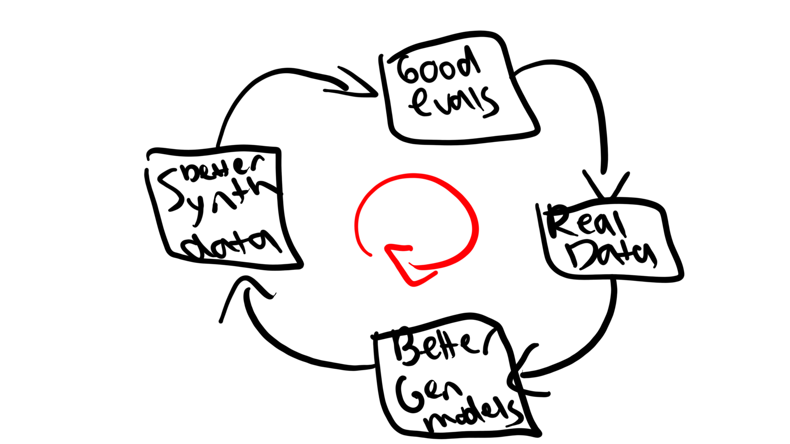

Data Flywheel
Contents
Data Flywheel#
In the field of machine learning, a data flywheel refers to a self-sustaining cycle of data collection, analysis, and use that drives continuous improvement and growth in ML models and systems. This might involve collecting data from a variety of sources (such as sensor data, customer interactions, or product usage data), using that data to train and refine ML models, and then using those models to make predictions or decisions that drive further data collection and analysis.
One key aspect of a data flywheel in the context of ML is the way in which it can drive the continuous improvement and evolution of ML models and systems. By collecting and analyzing more data, ML models can become more accurate and reliable over time, leading to better predictions and decisions, which in turn drives the collection of more data. This creates a virtuous cycle that can drive sustained improvement and growth in the performance and capabilities of ML models and systems.
Data flywheels can be used in a variety of applications, including predictive analytics, recommendation systems, and autonomous systems. In each case, the goal is to use data to drive continuous improvement and growth in the performance and capabilities of ML models and systems, creating a self-sustaining cycle that drives long-term success.
Usage#
Withing Argus the data-flywheel approach can be implemented to ensure that each use of the tool further expands the potential of itself to provide the best results.
The usefulness of Argus as a worthwhile product depends primarily on its potential to provide the best possible evaluations for the client models (and a better user experience). As the validation is mostly propelled by the GANs and CycleGANs, having the best-performant GANs is crucial. This can be achieved either by a better, more-diverse dataset, or by unique architectures.
The flywheel tackles the first part by ensuring the GAN models are continuously trained on an ever-expanding, more diverse dataset to ensure the best models are selected at every step of the way, and thus more clients are using it(providing more useful information that then improves the models and so on ad infinitum).
{kind=link}
Implementation#
To implement the “flywheel”, periodic training and evaluation of the multiple GAN architectures on increased datasets should be performed, thus selecting the best trained models for client use. Client usage (when applicable) of previously unseen images should be fed into the generator dataset (with proper class distribution care). In the same vein, obtaining more real world data also allows extending the training, validation and testing dataset of the generators.
Datasets can be pruned (to keep them manageable) if desired by selecting those images that are distinct from each other and that maximize the distance / entropy of the dataset. Special care must be taken to avoid using the synthetic data from the GANs within the generator dataset as this risks of introducing a priori bias.
Furthermore, expanding State-of-the-Art models and datasets from academia can be implemented (when applicable) to continuously extend the validation capabilities of Argus.
The largest challenge for the implementation of such a system is the legal one of how a third-party analyzes data obtained from another. Depending on the jurisdiction, it is likely that this implementation is complex if not downright impossible.
Additionally, convincing OEMs and other ADAS providers to grant third-party use of their data. Multiple examples of how this has been accomplished in the imaging sector can be seen in the success of Google Photos and Lensa, but hasn’t been thoroughly explored in automotive scenarios.